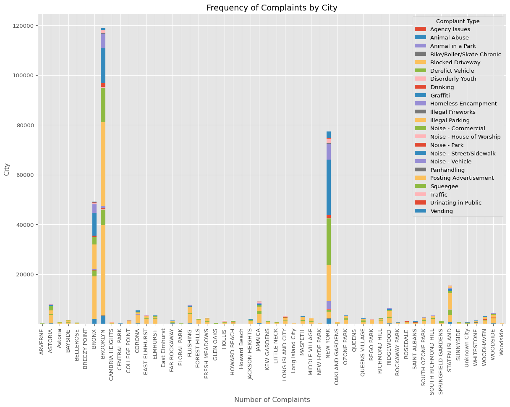
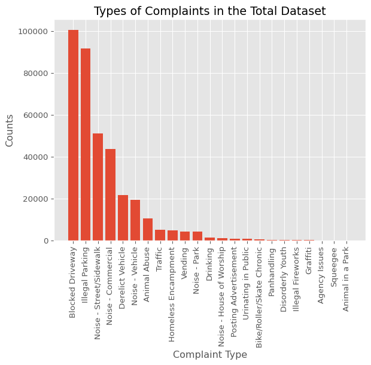
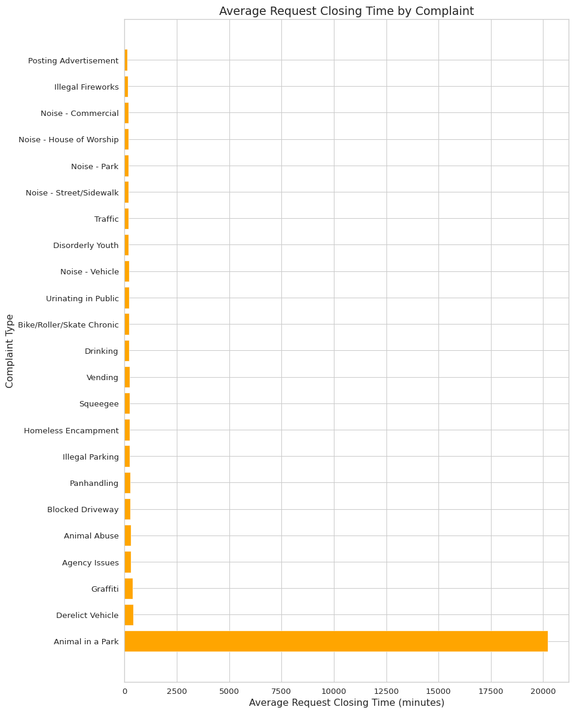
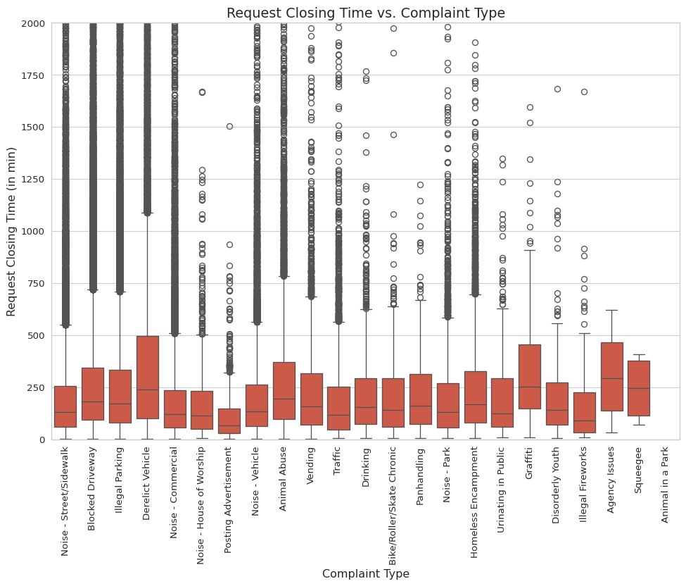

Data analysis of service request calls from public dataset.
Author
Chaance Graves
Published
May 9, 2023
Customer Service Requests Analysis
Problem Statement
Analyze the data on service request (311) call from New York City. Utilize Data Wrangling techniques to understand the patterns in the data and visualize the major type of complaints.
Import the libraries for analysis
import numpy as npimport pandas as pdimport seaborn as snsimport matplotlib.pyplot as plt%matplotlib inlinefrom ydata_profiling import ProfileReportimport warningswarnings.filterwarnings('ignore')
Improve your data and profiling with ydata-sdk, featuring data quality scoring, redundancy detection, outlier identification, text validation, and synthetic data generation.
Understanding the dataset
# checking the info about the installed pandas package versionprint(pd.show_versions())
# Let's get the info about the dataset, shape of the dimensionsdf.info()print("\n")print( f"The shape of the dataset is {df.shape}")print("\n")
<class 'pandas.core.frame.DataFrame'>
RangeIndex: 364558 entries, 0 to 364557
Data columns (total 53 columns):
# Column Non-Null Count Dtype
--- ------ -------------- -----
0 Unique Key 364558 non-null int64
1 Created Date 364558 non-null object
2 Closed Date 362177 non-null object
3 Agency 364558 non-null object
4 Agency Name 364558 non-null object
5 Complaint Type 364558 non-null object
6 Descriptor 358057 non-null object
7 Location Type 364425 non-null object
8 Incident Zip 361560 non-null float64
9 Incident Address 312859 non-null object
10 Street Name 312859 non-null object
11 Cross Street 1 307370 non-null object
12 Cross Street 2 306753 non-null object
13 Intersection Street 1 51120 non-null object
14 Intersection Street 2 50512 non-null object
15 Address Type 361306 non-null object
16 City 361561 non-null object
17 Landmark 375 non-null object
18 Facility Type 362169 non-null object
19 Status 364558 non-null object
20 Due Date 364555 non-null object
21 Resolution Description 364558 non-null object
22 Resolution Action Updated Date 362156 non-null object
23 Community Board 364558 non-null object
24 Borough 364558 non-null object
25 X Coordinate (State Plane) 360528 non-null float64
26 Y Coordinate (State Plane) 360528 non-null float64
27 Park Facility Name 364558 non-null object
28 Park Borough 364558 non-null object
29 School Name 364558 non-null object
30 School Number 364558 non-null object
31 School Region 364557 non-null object
32 School Code 364557 non-null object
33 School Phone Number 364558 non-null object
34 School Address 364558 non-null object
35 School City 364558 non-null object
36 School State 364558 non-null object
37 School Zip 364557 non-null object
38 School Not Found 364558 non-null object
39 School or Citywide Complaint 0 non-null float64
40 Vehicle Type 0 non-null float64
41 Taxi Company Borough 0 non-null float64
42 Taxi Pick Up Location 0 non-null float64
43 Bridge Highway Name 297 non-null object
44 Bridge Highway Direction 297 non-null object
45 Road Ramp 262 non-null object
46 Bridge Highway Segment 262 non-null object
47 Garage Lot Name 0 non-null float64
48 Ferry Direction 1 non-null object
49 Ferry Terminal Name 2 non-null object
50 Latitude 360528 non-null float64
51 Longitude 360528 non-null float64
52 Location 360528 non-null object
dtypes: float64(10), int64(1), object(42)
memory usage: 147.4+ MB
The shape of the dataset is (364558, 53)
# Let's check if any null values existsnull_counts = df.isnull().sum()print(null_counts)
Unique Key 0
Created Date 0
Closed Date 2381
Agency 0
Agency Name 0
Complaint Type 0
Descriptor 6501
Location Type 133
Incident Zip 2998
Incident Address 51699
Street Name 51699
Cross Street 1 57188
Cross Street 2 57805
Intersection Street 1 313438
Intersection Street 2 314046
Address Type 3252
City 2997
Landmark 364183
Facility Type 2389
Status 0
Due Date 3
Resolution Description 0
Resolution Action Updated Date 2402
Community Board 0
Borough 0
X Coordinate (State Plane) 4030
Y Coordinate (State Plane) 4030
Park Facility Name 0
Park Borough 0
School Name 0
School Number 0
School Region 1
School Code 1
School Phone Number 0
School Address 0
School City 0
School State 0
School Zip 1
School Not Found 0
School or Citywide Complaint 364558
Vehicle Type 364558
Taxi Company Borough 364558
Taxi Pick Up Location 364558
Bridge Highway Name 364261
Bridge Highway Direction 364261
Road Ramp 364296
Bridge Highway Segment 364296
Garage Lot Name 364558
Ferry Direction 364557
Ferry Terminal Name 364556
Latitude 4030
Longitude 4030
Location 4030
dtype: int64
Observations:
There are null values present in the df dataframe for the following variables:
Closed Date
Descriptor
Location Type etc…
Exploratory Data Analysis (EDA)
we use plt.style.use('ggplot') to set the ggplot style for Matplotlib. We then use the same code as before to count the null values and create the bar chart, and set the chart title and axis labels using plt.title(), plt.xlabel(), and plt.ylabel().
plt.style.use('ggplot')# Create bar chart of null value countsnull_counts.plot.barh(figsize=(15,10), stacked=True)# Set chart title and axis labelsplt.title('Null Value Counts')plt.xlabel('Columns', labelpad=10)plt.ylabel('Count')# Show chartplt.show()
# Remove null values from "Closed Date" columndf.dropna(subset=["Closed Date"], inplace=True)# Show sample of dataset with null values removeddf.head()
Unique Key
Created Date
Closed Date
Agency
Agency Name
Complaint Type
Descriptor
Location Type
Incident Zip
Incident Address
...
Bridge Highway Name
Bridge Highway Direction
Road Ramp
Bridge Highway Segment
Garage Lot Name
Ferry Direction
Ferry Terminal Name
Latitude
Longitude
Location
0
32310363
12/31/2015 11:59:45 PM
01/01/2016 12:55:15 AM
NYPD
New York City Police Department
Noise - Street/Sidewalk
Loud Music/Party
Street/Sidewalk
10034.0
71 VERMILYEA AVENUE
...
NaN
NaN
NaN
NaN
NaN
NaN
NaN
40.865682
-73.923501
(40.86568153633767, -73.92350095571744)
1
32309934
12/31/2015 11:59:44 PM
01/01/2016 01:26:57 AM
NYPD
New York City Police Department
Blocked Driveway
No Access
Street/Sidewalk
11105.0
27-07 23 AVENUE
...
NaN
NaN
NaN
NaN
NaN
NaN
NaN
40.775945
-73.915094
(40.775945312321085, -73.91509393898605)
2
32309159
12/31/2015 11:59:29 PM
01/01/2016 04:51:03 AM
NYPD
New York City Police Department
Blocked Driveway
No Access
Street/Sidewalk
10458.0
2897 VALENTINE AVENUE
...
NaN
NaN
NaN
NaN
NaN
NaN
NaN
40.870325
-73.888525
(40.870324522111424, -73.88852464418646)
3
32305098
12/31/2015 11:57:46 PM
01/01/2016 07:43:13 AM
NYPD
New York City Police Department
Illegal Parking
Commercial Overnight Parking
Street/Sidewalk
10461.0
2940 BAISLEY AVENUE
...
NaN
NaN
NaN
NaN
NaN
NaN
NaN
40.835994
-73.828379
(40.83599404683083, -73.82837939584206)
4
32306529
12/31/2015 11:56:58 PM
01/01/2016 03:24:42 AM
NYPD
New York City Police Department
Illegal Parking
Blocked Sidewalk
Street/Sidewalk
11373.0
87-14 57 ROAD
...
NaN
NaN
NaN
NaN
NaN
NaN
NaN
40.733060
-73.874170
(40.733059618956815, -73.87416975810375)
5 rows × 53 columns
# Check if null values are still present in "Closed Date" columnif df['Closed Date'].isnull().any():print('Null values still present in "Closed Date" column.')else:print('No null values present in "Closed Date" column.')
No null values present in "Closed Date" column.
# Convert the "Closed Date" and "Created Date" columns to datetime formatdf["Created Date"] = pd.to_datetime(df["Created Date"], format="%m/%d/%Y %I:%M:%S %p")df["Closed Date"] = pd.to_datetime(df["Closed Date"], format="%m/%d/%Y %I:%M:%S %p")df.info()
<class 'pandas.core.frame.DataFrame'>
Index: 362177 entries, 0 to 364557
Data columns (total 53 columns):
# Column Non-Null Count Dtype
--- ------ -------------- -----
0 Unique Key 362177 non-null int64
1 Created Date 362177 non-null datetime64[ns]
2 Closed Date 362177 non-null datetime64[ns]
3 Agency 362177 non-null object
4 Agency Name 362177 non-null object
5 Complaint Type 362177 non-null object
6 Descriptor 355681 non-null object
7 Location Type 362047 non-null object
8 Incident Zip 361502 non-null float64
9 Incident Address 310491 non-null object
10 Street Name 310491 non-null object
11 Cross Street 1 306846 non-null object
12 Cross Street 2 306713 non-null object
13 Intersection Street 1 50628 non-null object
14 Intersection Street 2 50504 non-null object
15 Address Type 361248 non-null object
16 City 361503 non-null object
17 Landmark 375 non-null object
18 Facility Type 362159 non-null object
19 Status 362177 non-null object
20 Due Date 362176 non-null object
21 Resolution Description 362177 non-null object
22 Resolution Action Updated Date 362138 non-null object
23 Community Board 362177 non-null object
24 Borough 362177 non-null object
25 X Coordinate (State Plane) 360470 non-null float64
26 Y Coordinate (State Plane) 360470 non-null float64
27 Park Facility Name 362177 non-null object
28 Park Borough 362177 non-null object
29 School Name 362177 non-null object
30 School Number 362177 non-null object
31 School Region 362176 non-null object
32 School Code 362176 non-null object
33 School Phone Number 362177 non-null object
34 School Address 362177 non-null object
35 School City 362177 non-null object
36 School State 362177 non-null object
37 School Zip 362176 non-null object
38 School Not Found 362177 non-null object
39 School or Citywide Complaint 0 non-null float64
40 Vehicle Type 0 non-null float64
41 Taxi Company Borough 0 non-null float64
42 Taxi Pick Up Location 0 non-null float64
43 Bridge Highway Name 297 non-null object
44 Bridge Highway Direction 297 non-null object
45 Road Ramp 262 non-null object
46 Bridge Highway Segment 262 non-null object
47 Garage Lot Name 0 non-null float64
48 Ferry Direction 0 non-null object
49 Ferry Terminal Name 0 non-null object
50 Latitude 360470 non-null float64
51 Longitude 360470 non-null float64
52 Location 360470 non-null object
dtypes: datetime64[ns](2), float64(10), int64(1), object(40)
memory usage: 149.2+ MB
# Create a new column called "Time Delta" and calculate the time delta between "Closed Date" and "Created Date"df["request_closing_time_sec"] = (df["Closed Date"] - df["Created Date"]).dt.total_seconds()# View descriptive statistics of the "Time Delta" columndf["request_closing_time_sec"].describe()
count 3.621770e+05
mean 1.511330e+04
std 2.110255e+04
min 6.100000e+01
25% 4.533000e+03
50% 9.616000e+03
75% 1.887800e+04
max 2.134342e+06
Name: request_closing_time_sec, dtype: float64
Finding the major type of complaints
# Check the number of null values in the "Complaint_Type" and "City" columns using f-stringsprint(f'Number of null values in "Complaint_Type" column: {df["Complaint Type"].isnull().sum()}')print(f'Number of null values in "City" column: {df["City"].isnull().sum()}')
Number of null values in "Complaint_Type" column: 0
Number of null values in "City" column: 674
# fill in missing values (nan) in the 'City' column with 'Unknown City'df['City'].fillna('Unknown City', inplace=True)# Get Unique Count using Series.unique()city_count = df.City.unique().size# Let's check what all unique values are in the 'City' columncity_col = df['City'].unique()print(f"There are {city_count} values in the dataset that contain the following info: \n{city_col}")
total_city_complaints.plot.bar(figsize=(15,10), stacked=True)# set the axis labels and titleplt.xlabel('Number of Complaints')plt.ylabel('City')plt.title('Frequency of Complaints by City')# show the plotplt.show()

Data Visualization of the major type of complaints
In order to find the major type of complaints in the dataset, the following code groups the dataset by complaint type, counts the number of occurrences for each type, and then sorts the counts in descending order. The resulting bar graph shows the counts for each complaint type.
# Group by complaint type and count the number of occurrencescomplaint_counts = df.groupby('Complaint Type').size().reset_index(name='counts')# Sort the counts in descending ordercomplaint_counts = complaint_counts.sort_values('counts', ascending=False)complaint_counts
Complaint Type
counts
4
Blocked Driveway
100624
11
Illegal Parking
91716
15
Noise - Street/Sidewalk
51139
12
Noise - Commercial
43751
5
Derelict Vehicle
21518
16
Noise - Vehicle
19301
1
Animal Abuse
10530
20
Traffic
5196
9
Homeless Encampment
4879
22
Vending
4185
14
Noise - Park
4089
7
Drinking
1404
13
Noise - House of Worship
1068
18
Posting Advertisement
679
21
Urinating in Public
641
3
Bike/Roller/Skate Chronic
475
17
Panhandling
325
6
Disorderly Youth
315
10
Illegal Fireworks
172
8
Graffiti
157
0
Agency Issues
8
19
Squeegee
4
2
Animal in a Park
1
# Plot the bar graphplt.bar(complaint_counts['Complaint Type'], complaint_counts['counts'])plt.xticks(rotation=90)plt.xlabel('Complaint Type')plt.ylabel('Counts')plt.title('Types of Complaints in the Total Dataset')plt.show()

From our bar chart analysis, the top 10 major complaint types are the following:
Blocked Driveway
Illegal Parking
Noisy Street/Sidewalk
Noise - Commerical buildings
Derelict Vehicle
Noise - Vehicle
Animal Abuse
Traffic
Homeless Encampment
Vending
Let’s explore the complaint data specifically for NYC …
This code filters the dataset to only include complaints from New York City, groups the remaining data by complaint type, counts the number of occurrences for each type, and then sorts the counts in descending order. The resulting output shows the frequency of each complaint type for New York City.
# Extract and count the unique values in the "Complaint Type" columnnyc_complaint_types =len(nyc_data['Complaint Type'].unique())# Print the complaint typesprint(f"there are {nyc_complaint_types} complaint types in New York City.")# Group by complaint type and count the number of occurrencesnyc_complaint_counts = nyc_data.groupby('Complaint Type').size().reset_index(name='counts')# Sort the counts in descending ordernyc_complaint_counts = nyc_complaint_counts.sort_values('counts', ascending=False)nyc_data['Complaint Type'].value_counts()
# Plot the bar graphplt.bar(nyc_complaint_counts['Complaint Type'], nyc_complaint_counts['counts'], color='green')plt.xticks(rotation=90)plt.xlabel('Complaint Type')plt.ylabel('Counts')plt.title('Types of Complaints in New York City')plt.show()
Let’s explore the complaint data specifically for Brooklyn …
This code filters the dataset to only include complaints from Brooklyn, groups the remaining data by complaint type, counts the number of occurrences for each type, and then sorts the counts in descending order. The resulting output shows the frequency of each complaint type for Brooklyn.
# Extract and count the unique values in the "Complaint Type" columnbk_complaint_types =len(bk_data['Complaint Type'].unique())# Print the complaint typesprint(f"there are {bk_complaint_types} complaint types in Brooklyn.")# Group by complaint type and count the number of occurrencesbk_complaint_counts = bk_data.groupby('Complaint Type').size().reset_index(name='counts')# Sort the counts in descending orderbk_complaint_counts = bk_complaint_counts.sort_values('counts', ascending=False)bk_data['Complaint Type'].value_counts()
# Plot the bar graphplt.bar(bk_complaint_counts['Complaint Type'], bk_complaint_counts['counts'], color='blue')plt.xticks(rotation=90)plt.xlabel('Complaint Type')plt.ylabel('Counts')plt.title('Types of Complaints in Brooklyn')plt.show()
# create a scatter plot of the concentration of complaints across Brooklynbk_data.plot.scatter(x='Longitude', y='Latitude', s=0.1, alpha=0.5, figsize=(10, 8))plt.xlabel('Longitude')plt.ylabel('Latitude')plt.title('Scatter Plot of Complaints Concentration in Brooklyn')# create a hexbin plot of the concentration of complaints across Brooklynbk_data.plot.hexbin(x='Longitude', y='Latitude', gridsize=30, cmap='Blues', figsize=(10, 8))plt.xlabel('Longitude')plt.ylabel('Latitude')plt.title('Hexbin Plot of Complaints Concentration in Brooklyn')# show the plotsplt.show()
This code groups the data by both city and complaint type, counts the number of occurrences for each combination, and then prints the resulting output, which shows the various types of complaints in each city.
# Group by city and complaint type and count the number of occurrencescomplaints_by_city = df.groupby(['City', 'Complaint Type']).size().reset_index(name='counts')# Print the various types of complaints in each citycomplaints_by_city
City
Complaint Type
counts
0
ARVERNE
Animal Abuse
46
1
ARVERNE
Blocked Driveway
50
2
ARVERNE
Derelict Vehicle
32
3
ARVERNE
Disorderly Youth
2
4
ARVERNE
Drinking
1
...
...
...
...
787
Woodside
Blocked Driveway
27
788
Woodside
Derelict Vehicle
8
789
Woodside
Illegal Parking
124
790
Woodside
Noise - Commercial
2
791
Woodside
Noise - Street/Sidewalk
5
792 rows × 3 columns
This code uses the pd.pivot_table() function to pivot the data in the original DataFrame df. The resulting DataFrame, df_new, has complaint types as rows, cities as columns, and the count of occurrences as the values. The fill_value=0 parameter fills any missing values with zeros. The resulting output shows the new DataFrame with cities as columns and complaint types in rows.
# Pivot the data to create a new DataFramedf_new = pd.pivot_table(df, index='Complaint Type', columns='City', aggfunc=len, fill_value=0)# Print the new DataFramedf_new.head()
Address Type
...
request_closing_time_sec
City
ARVERNE
ASTORIA
Astoria
BAYSIDE
BELLEROSE
BREEZY POINT
BRONX
BROOKLYN
CAMBRIA HEIGHTS
CENTRAL PARK
...
SOUTH OZONE PARK
SOUTH RICHMOND HILL
SPRINGFIELD GARDENS
STATEN ISLAND
SUNNYSIDE
Unknown City
WHITESTONE
WOODHAVEN
WOODSIDE
Woodside
Complaint Type
Agency Issues
0
0
0
0
0
0
0
0
0
0
...
0
0
0
0
0
8
0
0
0
0
Animal Abuse
46
170
0
53
15
2
1971
3191
15
0
...
74
40
42
786
40
1
43
57
111
0
Animal in a Park
0
0
0
0
0
0
0
0
0
0
...
0
0
0
0
0
0
0
0
0
0
Bike/Roller/Skate Chronic
0
16
0
0
1
0
22
124
0
0
...
1
1
0
10
2
2
4
2
5
0
Blocked Driveway
50
3436
159
514
138
3
17062
36445
177
0
...
1202
1946
330
2845
278
86
279
1363
2038
27
5 rows × 2808 columns
# Pivot table to get counts of complaint types for each citycomplaints_by_city = pd.pivot_table(data=df, index='Complaint Type', columns='City', aggfunc='size', fill_value=0)complaints_by_city.head()
City
ARVERNE
ASTORIA
Astoria
BAYSIDE
BELLEROSE
BREEZY POINT
BRONX
BROOKLYN
CAMBRIA HEIGHTS
CENTRAL PARK
...
SOUTH OZONE PARK
SOUTH RICHMOND HILL
SPRINGFIELD GARDENS
STATEN ISLAND
SUNNYSIDE
Unknown City
WHITESTONE
WOODHAVEN
WOODSIDE
Woodside
Complaint Type
Agency Issues
0
0
0
0
0
0
0
0
0
0
...
0
0
0
0
0
8
0
0
0
0
Animal Abuse
46
170
0
53
15
2
1971
3191
15
0
...
74
40
42
786
40
1
43
57
111
0
Animal in a Park
0
0
0
0
0
0
0
0
0
0
...
0
0
0
0
0
0
0
0
0
0
Bike/Roller/Skate Chronic
0
16
0
0
1
0
22
124
0
0
...
1
1
0
10
2
2
4
2
5
0
Blocked Driveway
50
3436
159
514
138
3
17062
36445
177
0
...
1202
1946
330
2845
278
86
279
1363
2038
27
5 rows × 54 columns
# Plot the pivot table as a bar chartsns.set_style("whitegrid")plt.figure(figsize=(20,10))sns.barplot(data=complaints_by_city, palette='Set3')plt.xticks(rotation=90, fontsize=12)plt.yticks(fontsize=12)plt.xlabel('City', fontsize=16)plt.ylabel('Complaint Type Count', fontsize=16)plt.title('Complaint Types in Each City', fontsize=20)plt.legend(loc='upper right', fontsize=14)plt.show()
Statistical Analysis of Request_Closing_Time
# Calculating the response time in hrs and min.df['request_closing_time_hrs'] = df['Closed Date'].values - df['Created Date'].valuesdf['request_closing_time_min'] = df['request_closing_time_hrs']/np.timedelta64(1,'m')df.head()
# Calculate the average closing time by cityavg_closing_time_per_city = df.groupby('City')['request_closing_time_min'].mean().sort_values()avg_closing_time_per_city
City
ARVERNE 137.840605
ROCKAWAY PARK 139.602908
LITTLE NECK 155.031437
OAKLAND GARDENS 156.240167
BAYSIDE 160.062978
FAR ROCKAWAY 161.193068
NEW YORK 175.343723
FLUSHING 177.446478
FOREST HILLS 184.097636
WHITESTONE 187.976467
CORONA 188.984584
COLLEGE POINT 190.393782
JACKSON HEIGHTS 190.885368
ELMHURST 194.108392
FRESH MEADOWS 200.741045
REGO PARK 202.462138
BREEZY POINT 205.197849
EAST ELMHURST 206.801481
CENTRAL PARK 206.921364
STATEN ISLAND 228.038305
BROOKLYN 236.607935
Howard Beach 241.750000
Astoria 242.452302
Long Island City 245.388922
ASTORIA 265.236501
RIDGEWOOD 268.285547
SAINT ALBANS 271.040767
East Elmhurst 273.630556
Woodside 281.455622
KEW GARDENS 283.319775
JAMAICA 305.346459
SOUTH OZONE PARK 308.283046
SOUTH RICHMOND HILL 318.020470
WOODHAVEN 321.714469
RICHMOND HILL 321.749064
MIDDLE VILLAGE 323.290492
OZONE PARK 328.309146
MASPETH 328.997706
HOLLIS 332.061427
HOWARD BEACH 346.959615
BRONX 353.116425
LONG ISLAND CITY 367.326726
SUNNYSIDE 380.744297
WOODSIDE 389.758733
NEW HYDE PARK 423.396512
GLEN OAKS 501.653463
SPRINGFIELD GARDENS 510.113239
CAMBRIA HEIGHTS 542.883117
Unknown City 556.662562
ROSEDALE 569.194745
BELLEROSE 576.173614
QUEENS VILLAGE 593.920472
FLORAL PARK 609.812160
QUEENS 717.171171
Name: request_closing_time_min, dtype: float64
# Create the horizontal bar chartfig, ax = plt.subplots(figsize=(10, 15))ax.barh(avg_closing_time_per_city.index, avg_closing_time_per_city.values, color='teal')# Set the title and axis labelsax.set_title('Average Request Closing Time by City')#ax.set_xlabel('Time Delta (seconds)')ax.set_xlabel('Average Request Closing Time (minutes)')ax.set_ylabel('City')# Invert the y-axis to show the cities with the highest closing times at the topax.invert_yaxis()# Display the plotplt.show()
Let’s see the avg. response time across different types of complaints. We will also compare them across each borough.
# Calculate the average closing time by complaint typeavg_closing_time_per_complaint = df.groupby('Complaint Type')['request_closing_time_min'].mean().sort_values()avg_closing_time_per_complaint
Complaint Type
Posting Advertisement 121.437604
Illegal Fireworks 168.558043
Noise - Commercial 184.762676
Noise - House of Worship 189.851451
Noise - Park 203.767592
Noise - Street/Sidewalk 203.854924
Traffic 205.152002
Disorderly Youth 206.062487
Noise - Vehicle 209.363334
Urinating in Public 215.988222
Bike/Roller/Skate Chronic 218.728140
Drinking 230.355009
Vending 239.437973
Squeegee 242.670833
Homeless Encampment 257.523075
Illegal Parking 260.840595
Panhandling 264.225846
Blocked Driveway 270.542025
Animal Abuse 300.542601
Agency Issues 304.818750
Graffiti 387.939066
Derelict Vehicle 422.660002
Animal in a Park 20210.566667
Name: request_closing_time_min, dtype: float64
# Create the horizontal bar chartfig, ax = plt.subplots(figsize=(10, 15))ax.barh(avg_closing_time_per_complaint.index, avg_closing_time_per_complaint.values, color='orange')# Set the title and axis labelsax.set_title('Average Request Closing Time by Complaint')#ax.set_xlabel('Time Delta (seconds)')ax.set_xlabel('Average Request Closing Time (minutes)')ax.set_ylabel('Complaint Type')# Invert the y-axis to show the cities with the highest closing times at the topax.invert_yaxis()# Display the plotplt.show()

Here you can see that the Animal in a Park takes almost approximately 2 weeks to resolve. Other complaint types are more frequent where Posting Advertisement took the fewest amount of time and Derelict Vehicle is responded slower than others.
# Create a list of boroughsboroughs = ['BRONX', 'BROOKLYN', 'MANHATTAN', 'QUEENS', 'STATEN ISLAND', 'Unspecified']# Create a figure with 5 subplotsfig, axs = plt.subplots(nrows=2, ncols=3, figsize=(16, 10))# Set the title of the figurefig.suptitle('Average Response Time for Complaint Types by Borough', fontsize=16)# Loop through each borough and create a subplotfor i, borough inenumerate(boroughs):# Calculate the average response time for each complaint type in the current borough borough_df = df[df['Borough'] == borough].groupby('Complaint Type')['request_closing_time_min'].mean().sort_values(ascending=False)# Create a subplot for the current borough ax = axs[i//3, i%3]# Set the title and x/y axis labels for the subplot ax.set_title(borough) ax.set_xlabel('Average Response Time (in minutes)') ax.set_ylabel('Complaint Type')# Create a horizontal bar chart for the average response time for each complaint type in the current borough ax.barh(borough_df.index, borough_df.values, color='cornflowerblue')# Set the x-axis limits ax.set_xlim(0, 3000)# Set the y-axis tick labels to be left-aligned ax.tick_params(axis='y', which='major', pad=10, left=True)# Adjust the spacing between the subplotsplt.subplots_adjust(left=0.1, bottom=0.1, right=0.9, top=0.85, wspace=0.4, hspace=0.5)# Display the plotplt.show()
Hypothesis Testing
plt.figure(figsize=(12,8)) # set the size of the plotbxp = sns.boxplot(x="Complaint Type", y="request_closing_time_min", data=df)plt.xticks(rotation=90) # rotate x-axis labels for readabilityplt.ylim((0,2000))plt.title('Request Closing Time vs. Complaint Type') # add titleplt.xlabel('Complaint Type') # add x-axis labelplt.ylabel('Request Closing Time (in min)') # add y-axis labelplt.show() # show the plot

Let’s identify the relationship between Complaint Type and Request_Closing_Time using p-values.
import scipy.stats as stats# Subset the data to only include relevant columnsdf_subset = df[['Complaint Type', 'request_closing_time_min']]# Drop rows with missing valuesdf_subset.dropna(inplace=True)# Create a dictionary to store the p-values for each Complaint Typep_values = {}# Loop through each Complaint Type and perform a t-testfor complaint_type in df_subset['Complaint Type'].unique(): subset_data = df_subset[df_subset['Complaint Type'] == complaint_type] _, p_value = stats.ttest_ind(subset_data['request_closing_time_min'], df_subset['request_closing_time_min'], equal_var=False) p_values[complaint_type] = p_value# Print the p-values for each Complaint Typefor complaint_type, p_value in p_values.items():print(f"{complaint_type}: {p_value}")
we create a contingency table using pd.crosstab() to count the number of complaints for each complaint type and city. Then, we use chi2_contingency() from the scipy.stats library to perform the chi-square test on the contingency table. Finally, we print the results including the chi-square value, p-value, degrees of freedom, and expected values.
The null hypothesis for the chi-square test is that there is no association between the two variables (in this case, Complaint Type and City), while the alternative hypothesis is that there is some association. If the p-value is less than our chosen significance level (e.g., 0.05), we reject the null hypothesis and conclude that there is evidence of a significant association between the variables.
# Import required librariesfrom scipy.stats import chi2_contingency# Create a contingency tablecont_table = pd.crosstab(df['Complaint Type'], df['City'])# Perform the chi-square testchi2, pval, dof, expected = chi2_contingency(cont_table)# Set significance levelalpha =0.05# Print resultsprint(f"Chi-square value: {chi2}")print(f"P-value: {pval}")print(f"Degrees of freedom: {dof}")print("Expected frequencies:")print(expected)print("\n")# Check if p-value is less than alphaif p_value < alpha:print("There is a significant difference between the two groups.")else:print("There is no significant difference between the two groups.")
Chi-square value: 145971.80461890675
P-value: 0.0
Degrees of freedom: 1166
Expected frequencies:
[[5.72095964e-03 1.76510380e-01 1.99902258e-02 ... 6.85189838e-02
9.62402361e-02 3.66671545e-03]
[7.53021313e+00 2.32331788e+02 2.63121347e+01 ... 9.01881124e+01
1.26676211e+02 4.82631421e+00]
[7.15119955e-04 2.20637975e-02 2.49877822e-03 ... 8.56487298e-03
1.20300295e-02 4.58339431e-04]
...
[3.71576329e+00 1.14643492e+02 1.29836516e+01 ... 4.45030800e+01
6.25080334e+01 2.38153168e+00]
[4.58391891e-01 1.41428942e+01 1.60171684e+00 ... 5.49008358e+00
7.71124892e+00 2.93795575e-01]
[2.99277701e+00 9.23369927e+01 1.04573869e+01 ... 3.58439934e+01
5.03456735e+01 1.91815052e+00]]
There is no significant difference between the two groups.
Kruskal-Wallis H Test - One-way ANOVA
The Kruskal-Wallis H Test is a non-parametric test, meaning that it makes no assumptions about the distribution of the data. However, it does assume that the samples are independent and that the variances of the populations are equal.
\[
H_0: \text{There is no significant difference in the mean of Request\_Closing\_Time across Complaint types}
\]
\[
H_1: \text{There is a significant difference in the mean of Request\_Closing\_Time across Complaint types}
\]
from scipy.stats import kruskalanova_df = df[['Complaint Type', 'request_closing_time_min']]anova_df = anova_df.dropna()anova_df.head()
Complaint Type
request_closing_time_min
0
Noise - Street/Sidewalk
55.500000
1
Blocked Driveway
87.216667
2
Blocked Driveway
291.566667
3
Illegal Parking
465.450000
4
Illegal Parking
207.733333
# Create a dictionary to store the data for each complaint typecomplaint_types = df['Complaint Type'].unique()data = {complaint_type: df.loc[df['Complaint Type'] == complaint_type, 'request_closing_time_min'] for complaint_type in complaint_types}# Perform the Kruskal-Wallis H Teststat, p = kruskal(*data.values())# Print the resultsprint(f"Kruskal-Wallis H Test Results:")print(f"Statistic: {stat:.4f}")print(f"P-value: {p:.4f}")
Kruskal-Wallis H Test Results:
Statistic: 11988.2694
P-value: 0.0000
Since the p value for the Complaint is less than 0.01, we accept alternate hypothesis testing (i.e. there’s a significant difference in the mean response time of different types of complaints)
Observations and Outcomes
Here are some of the major conclusions that can be drawn from the 311 Customer Service NYC dataset:
The most common complaint types across all boroughs are related to street parking conditions and noise.
Brooklyn has the highest number of complaints compared to other boroughs, while Queens takes the longest to resolve complaints.
The average response time varies depending on the complaint type and borough, with some types and boroughs experiencing longer response times than others.
The scatter and hexbin plots for Brooklyn illustrate the relationships between different complaint types and how they are clustered together.
The box plot shows significant variation in response times across different complaint types.
Hypothesis testing using the Kruskal-Wallis H Test and one-way ANOVA suggests that there are statistically significant differences in response times among different complaint types.
The p-value and chi-squared test suggest that there is a significant association between certain complaint types and boroughs.
Overall, the analysis of the 311 customer service dataset provides valuable insights into common complaints and response times across boroughs, which can help inform decisions on resource allocation and policy changes.